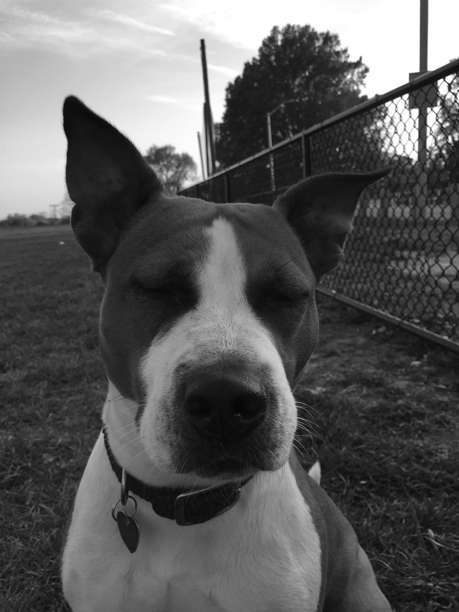

2018.10.13
We will be married in a private service on Saturday evening. We know some people may be disappointed to not be in attendance for the ceremony, but we humbly ask for your understanding and support. We look forward to seeing everyone at the after party and reception.
We hope that our family and friends will spend Saturday with one-another, catching-up and exploring Baltimore, the city we have made our home. On the center spread you’ll find a list of our favorite shops, restaurants and sights.
We have a block reserved at the Hotel Revival in Mt. Vernon. You can book a room via this link or by calling (410) 727-7101. If the block is fully booked, or you’d prefer to stay elsewhere, there are many other hotels in the city that can accomodate you. We recommend staying in one of the following neighborhoods and avoiding the Inner Harbor:
This neighborhood is where we had our first apartment together. It has great restaurants, bars, and museums, and is within walking distance of the Station North Arts District. Wet City, the venue for the after party, is located here.
| Hotel Indigo | (410) 625-6200 | $$ |
| The Ivy Hotel | (410) 514-6500 | $$$$ |
We separately lived in Fells Point in our years after college. It was the location of our first date and features lots of live music, food, and bars. This is a great place to stay if you’re looking for active night-life and don’t mind a little noise. You can even take the Water Taxi across the harbor to the reception on Sunday.
| Admiral Fell Inn | (410) 522-7377 | $$ |
| Sagamore Pendry | (443) 552-1400 | $$$$ |
If you’d prefer to stay in an AirBNB, we are happy to answer questions or provide guidance. Please ask!
We have been living together for over four years and are lucky enough to have all of our needs met. In lieu of gifts, we encourage you to make a donation to one of the following charities whose missions we believe in:
HCMD provides health services, education, and advocacy to help reduce the incidence and burden of homelessness in Baltimore. We have friends that work for this organization and have seen the impact of their work.
The Human Utility helps people, mostly in Baltimore and Detroit, pay their water bills to ensure that everyone has access to this fundamental human right. This non-profit was co-founded by a friend and they provide the option of giving 100% of your donation directly to paying someone’s water bill.
PRH works to improve access to comprehensive reproductive health care, especially to meet the health care needs of economically disadvantaged patients.
Alternatively, we have set up a registry through zola.com and will also graciously accept financial contributions to put towards future travel plans and renovations to our home.
